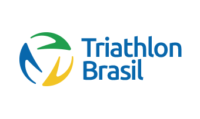
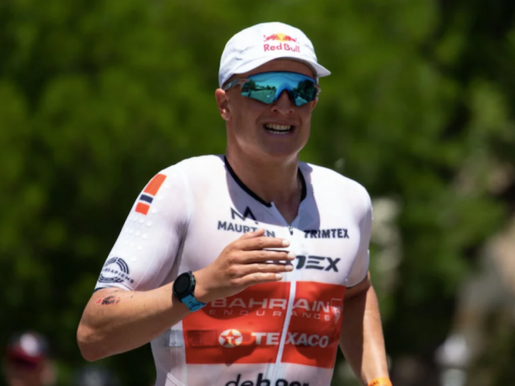
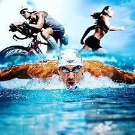

O Triathlon surgiu em 1974 em San Diego, Califórnia (EUA). Um clube de atletismo enviou uma planilha de
treinamentos com exercícios de natação e ciclismo para que usassem nas férias. No retorno às atividades,
os treinadores fizeram um teste para saber se os atletas haviam feito a “lição de casa”, que consistia
em nadar 500 metros na piscina do clube, pedalar 12 quilômetros em um condomínio fechado ao lado do
clube e, finalmente, correr 5 quilômetros na pista de atletismo.
Os atletas gostaram tanto da “brincadeira” que pediram para os treinadores repetirem o programa nas
férias seguintes, porém, convidando os guarda-vidas de San Diego para participar, como uma forma de
“desafio”. A prova contou com 55 participantes e os atletas levaram nítida vantagem. Para as férias
seguintes, em 1976, os salva-vidas propuseram algumas modificações no combinado: um percurso de 700
metros de natação em águas abertas (no mar), um pedal de 15 quilômetros na praia e arredores e por fim
4,5 quilômetros de corrida de cross country.
Em outubro de 1977, o ex-oficial John Collins sugeriu então uma prova contendo as três modalidades,
praticadas de forma sucessiva e sem intervalos. Quem as concluíssem em menor tempo seria conhecido como
“Ironman”, ou “Homem de Ferro” . Meses depois da proposta, em fevereiro de 1978, 15 atletas participaram
da disputa, que foi vencida por um motorista de táxi chamado John Haley.
O Triathlon chegou ao Brasil em 1981, mas a primeira competição oficial foi realizada somente em 1983,
na cidade do Rio de Janeiro (RJ).
Começou a fazer parte dos Jogos Olímpicos no ano de 2000.

(2) Triathlon Brasil
Alguns Campeões do Esporte:
(3) Alistair Brownlee
Alistair Brownlee
Triatleta britânico, medalhista de Ouro em 2012 e 2016
Gwen Jorgensen
Triatleta estadunidense, bicampeã mundial de 2014 e 2015
(4) Gwen Jorgensen

(5) Kristian Blummenfelt
Kristian Blummenfelt
Triatleta norueguês, medalhista de Ouro nos Jogos Oliímpicos de 2020

(6) Triathlon
Algumas moalidades do Triathlon:
Spring (Short):
Considerada ideal para iniciantes no esporte, especialmente por exigir mais velocidade e
explosão muscular
do que resistência dos atletas. O tempo médio de duração nessa modalidade é de 1 hora.
Natação: 750m; Ciclismo: 20Km; Corrida: 5Km
Olímpica (Standart):
Praticada nas Olimpíadas desde 2000, é a única modalidade desse esporte reconhecida
pelo Comitê Olímpico Internacional (COI). A duração média dessa
modalidade é de aproximadamente, 90 minutos.
Natação: 1,5Km; Ciclismo: 40Km; Corrida: 10 Km
Mixed Relay:
Essa modalidade consiste em um revezamento, onde cada atleta faz o percurso descrito abaixo,
em equipes de homens e mulheres. Nos Jogos Olímpicos, apareceu apenas em 2020. O tempo
de uma competição é 90 minutos.
Natação: 300m; Ciclismo: 8Km; Corrida: 2Km
Meio IronMan:
Essa modalidade apresenta um percurso intermediário da modalidade Ironman, sendo ideal para atletas
que almejam a preparação para iniciar nessa modalidade. A média de finalização do percurso é de 4 horas.
Natação: 1,9Km; Ciclismo: 90Km; Corrida: 21Km
IronMan:
Sendo uma tradição que remete às origens do esporte, é a submodalidade mais conhecida. O tempo médio
estimado para a realização desse percurso é de 12 horas, embora atletas recordistas do esporte já
tenham atingido marcas menores.